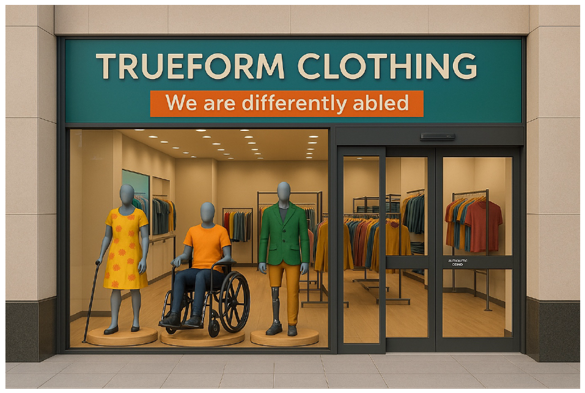
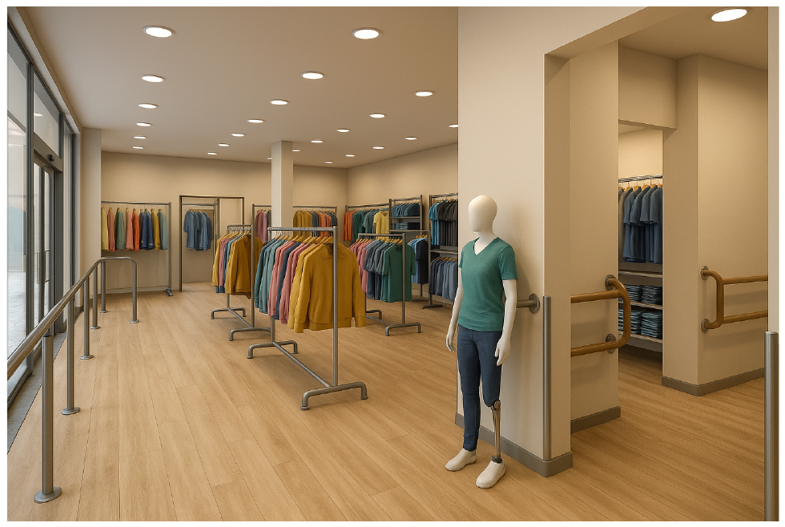
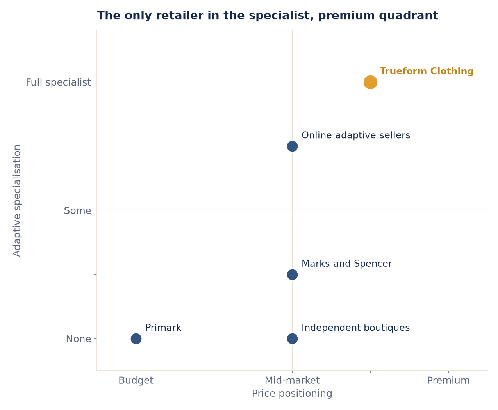
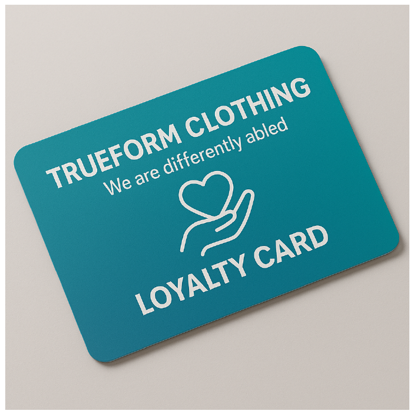
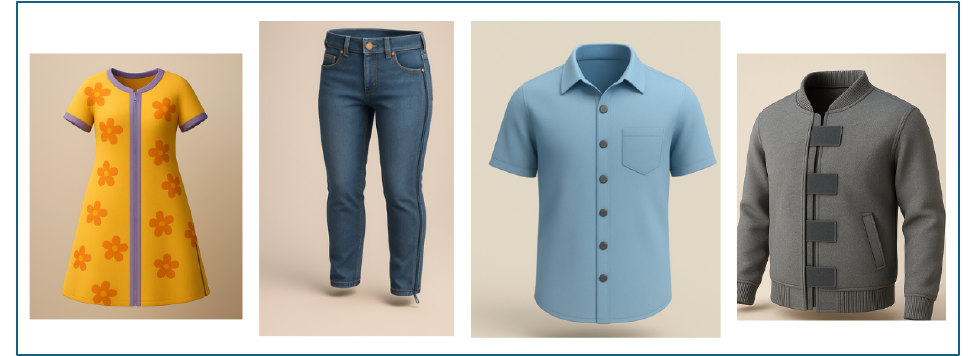
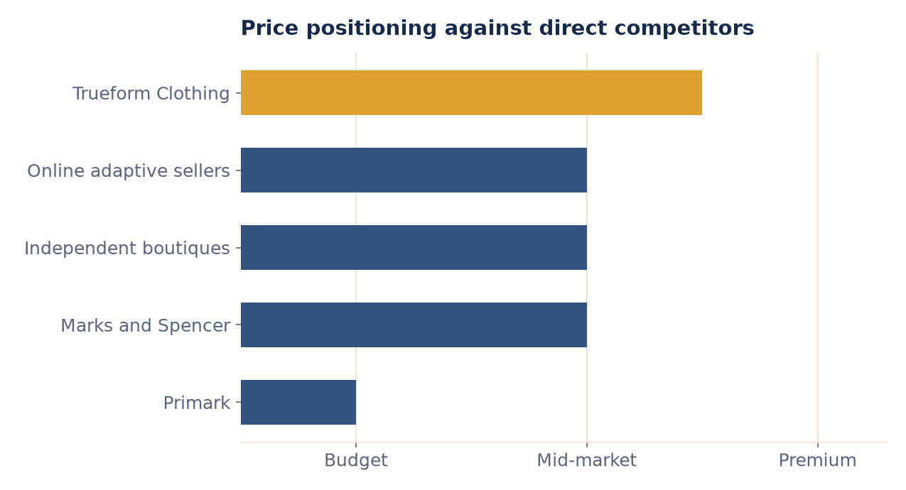

MSc Coursework · Retail Marketing and Management
An operational business proposal for Trueform Clothing, an adaptive and inclusive clothing retailer for Norwich, built around a market gap that most mainstream retailers overlook: disabled adults, elderly customers, and people with diverse physical needs currently have nowhere on the high street to buy clothing designed for them.
MSc Business Management, University of East Anglia · Retail Marketing and Management module · distinction grade · 2,485-word strategic proposal
The Concept
The storefront concept built for the assignment: adaptive mannequins, one with a prosthetic leg, one in a wheelchair, one with a walking aid, dressed in fashionable, modern clothing. Not visual tokenism, but a deliberate brand statement that makes diversity visible from the pavement.

Concept render produced for the coursework submission.
Gap in Market and Rationale
The adaptive and inclusive clothing market is a valuable segment that mainstream UK clothing retailers largely overlook. Norwich has no mainstream high street retailer serving this market, despite an ageing population and established local healthcare and disability services (House of Commons Library, 2024).
Source: House of Commons Library (2024). Applying the "Big Middle" theory (Levy, Weitz and Grewal, 2023), Trueform Clothing can command a differentiated middle position that fuses functional innovation with price accessibility, appealing to both the specialist audience and ethically motivated mainstream consumers (Mintel, 2022; Giant Peach's Ethical Trends, 2023). Segmentation theory supports this from two directions at once: demographic segmentation (disabled shoppers, elderly people, carers) and psychographic segmentation (consumers who actively seek out ethical, socially responsible brands).
Retail Design, Format and Location
Wide aisles, adjustable-height fixtures, automatic doors, accessible dressing rooms with seating and a grab bar, and sensory-friendly lighting are built into the store rather than added on top of it. A specialty format, focused solely on adaptive clothing, was chosen over a generalist model: it supports curated ranges, trained staff, and a clearer brand identity than a general clothing retailer could sustain (Levy, Weitz and Grewal, 2023).

Location was chosen the same way. Chantry Place, Norwich's main shopping centre, offers high footfall and proximity to anchor stores such as Frasers, Apple, H&M, Urban Outfitters and Zara. Reilly's Law of Retail Gravitation predicts that this centrality draws customers from surrounding areas, and Hotelling's Principle explains the advantage of sitting close to major retailers rather than away from them (Berman, Evans and Chatterjee, 2018).
Competitive Environment and Positioning
The report's competitive review compares Trueform against four alternatives a Norwich shopper actually has today: Primark (flexible sizing only, no functional adaptations), Marks and Spencer (adaptive childrenswear, but few adult ranges), independent boutiques (fashionable, but not accessible), and online adaptive sellers (genuinely functional, but no fitting or customisation). Scoring each on price positioning and adaptive specialisation turns that comparison into a chart:

Trueform is the only retailer combining a mid-to-premium price point with full adaptive specialisation, the exact gap Porter's focused differentiation strategy is built to exploit (Porter, 2004; Berman, Evans and Chatterjee, 2018).
This is not a claim that Trueform is better on every axis. Online adaptive sellers score almost as high on specialisation, and cheaper than a specialist bricks-and-mortar store; the report's argument is that fitting, immediate availability, and in-person customisation are exactly what an online-only competitor cannot offer, and that gap is where Trueform competes.
Retail Operations
Operations follow the Five S's model (Pal and Byrom, 2003): five levers that all feed into the same outcome, shopper benefit.
Real-time stock tracking and RFID tagging for accurate, fast replenishment.
Coherent store appearance and consistent, trained service at every visit.
Adaptive lines across sizes and styles, with waste minimised through ethical sourcing.
Broad aisles and height-adjustable fixtures that let customers shop independently.
Disability-aware training so advice is genuinely tailored, not generic.
Retail Image and Promotional Strategy
Adaptive fashion needs both awareness and credibility, so the strategy deliberately runs two channels together rather than picking one. Social media and adaptive-fashion influencer collaborations carry the brand's reach; offline collaborations with local charities, healthcare professionals and disability organisations carry its authenticity, since a digital-only campaign risks reading as performative rather than genuine (Levy, Weitz and Grewal, 2023). In-store activations, adaptive fashion shows, co-design workshops and product demonstrations, turn the store itself into a promotional channel.

Merchandising and Supply Chain Management
The range is built around magnetic-fastened shirts, velcro-fastened jackets, seated trousers with a prosthetic-friendly cut, front-fastening bras, and gender-neutral adaptive garments, deliberately styled as contemporary fashion rather than functional medical wear, to challenge the stigma often attached to adaptive clothing. Merchandise is laid out by functional category, seated apparel, post-operative recovery, sensory-sensitive fabrics, so customers can navigate by need rather than by guesswork. On the supply side, adaptive-wear specialists and ethical suppliers are paired with real-time inventory tracking, keeping stock flow responsive without the waste of speculative overstock.

Pricing Strategy
Price is treated as a signal, not just a revenue lever. Trueform sits above fast-fashion players like Primark, which carry no adaptive range at all, and slightly above Marks and Spencer, whose adaptive lines are limited and thinly marketed. The premium reflects the real cost of magnetic closures, prosthetic accommodation and ethical sourcing, offset by introductory discounts, loyalty rewards and bundle offers so the store never leans on long-term over-discounting to hold onto price-sensitive customers.

The same five-point price scale used in the positioning map above, read on its own axis.
Micromarketing
One-to-one marketing theory holds that customising outreach at the segment level builds stronger relationships than a single mass campaign (Berman, Evans and Chatterjee, 2018). Trueform pairs its demographic and psychographic segments directly with the channel built for each:
Adaptive product bundles through the loyalty programme, and co-hosted workshops with disability charities.
In-store advice and community partnerships, reaching customers who may not be reached through social media alone.
Early access to adaptive collections through NHS service partnerships.
Social media and influencer collaborations built around the brand's inclusivity mission, not just the product.
Conclusion
Trueform Clothing addresses a market that is both underserved and sizeable: inclusive design, ethical sourcing and targeted micromarketing combine into a differentiated position no single competitor currently occupies. The proposal is explicit about the risk on the other side of that focus: a niche strategy limits scalability, and ethical sourcing carries a higher operating cost than a mass-market supply chain, both of which require careful management rather than being assumed away.
Competency Shown
Format, location and positioning decisions justified with retail theory, the Big Middle, Reilly's Law, Hotelling's Principle, rather than asserted.
A five-competitor review turned into a scored positioning map and pricing ladder, using Porter's focused differentiation.
The Five S's model applied to a specific business, not left as an abstract framework.
Demographic and psychographic segments paired one-to-one with the channel built for each.
A 2,485-word proposal built to justify a real business decision, referenced throughout to primary retail literature.
Converting a qualitative report into charts: the same skill this portfolio's technical projects apply to SQL and Python output.